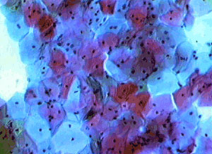

Aprendamos a identificar las células.
Materiales: 
- Levadura de pan.
- Azúcar granulada.
- Tubo ensayo.
- Portaobjetos y cubreobjetos.
- Azul de metileno.
- Gotario
Procedimiento
- Añade un poco de agua caliente a un vaso con agua fría para que alcanza una temperatura de 34 grados.
- Disuelve dos cucharadas de azúcar en 50 ML de agua
- En un tubo de ensayo añade una pizca de levadura y añade un volumen de agua tibia hasta la mitad del tubo.
- Agita suavemente el tubo con la solución de levaduras.
- Preparados vidrios portaobjetos con una gota de solución de azul de metileno y con un gotero extrae una gota de la solución de levaduras y colócala en una gota de azul de metileno.
- Cubre la preparación con un cubreobjetos.
- coloca el tubo en el agua a 34 grados Celsius por tres horas agitando de vez en cuando y manteniendo la temperatura añadiendo cada cierto tiempo pequeños volúmenes de agua.
- Al terminar el experimento prepara una nueva muestra de levaduras en un portaobjeto con una gota del cultivo.
- Observa las células en microscopio y anota tus observaciones